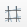

Справка 1 Географическая привязка
1.1 Географическая привязка в QGIS
Для привязки данных дистанционного зондирования в QGIS можно использовать WMS-сервис с мозаикой спутниковых снимков. Для включения мозаики зайдите в меню Модули – Управление и установка модулей…. Впишите в строку поиска QuickMapServices. Установите модуль.
Откроется окно модуля. В окне поиска геосервиса введите Google satelite. Нажмите Добавить.

Добавьте в качестве слоя данных привязываемый снимок.
Примечание: Если у вас такой панели не оказалось, это значит, что она отключена. Для включения панели щелкните правой кнопкой мыши по пустому месту на панели и найдите панель работы со слоями.
Включите Панель инструментов работы с растровыми данными. На ней нажмите кнопку Привязка растров .
Откроется окно привязки. Нажмите на кнопку Открыть растр  , добавьте привязываемый растр. Щелчок левой кнопкой мыши по привязываемому изображению открое окно, куда будет предложено ввести координаты. Если вы для привязки хотите использовать референцное изображение, нажмите на кнопку С карты.
, добавьте привязываемый растр. Щелчок левой кнопкой мыши по привязываемому изображению открое окно, куда будет предложено ввести координаты. Если вы для привязки хотите использовать референцное изображение, нажмите на кнопку С карты.
Окно ввода координат
Для настройки параметров трансформации нажмите на кнопку  . Для запуска процесса трансформации нажмите на кнопку
. Для запуска процесса трансформации нажмите на кнопку 
После добавления трансформированного изображения в основное окно карты убедитесь в правильности проделанной операции, сравнивая его с подложкой из мозаики спутниковых снимков. Для этого удобно использовать инструмент шторки.
Зайдите в Модули – Управление и установка модулей… и вбейте в поиск MapSwipe Tool. После этого появится панель шторки.
Выберите слой, который будет активен в режиме шторки (будет находиться под шторкой) и нажмите на кнопку .

Режим шторки для слоя Google Maps
| Карпачевский А.М. Фотограмметрия и основы дистанционного зондирования. М.: Географический факультет МГУ, 2020. |